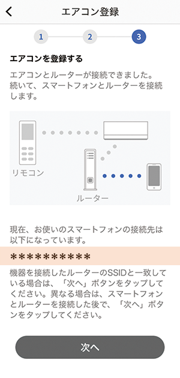
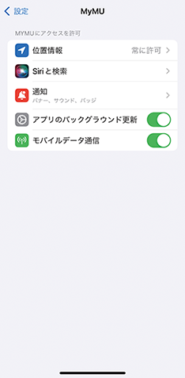
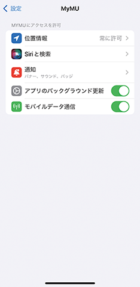

機器とルーターが接続済みの場合
- 以下にスマートフォンの接続先情報が表示されます。表示されているSSIDがエアコンを接続したルーターのSSIDと一致していることを確認してください。異なる場合は、エアコンを接続したルーターにスマートフォンを接続してください。接続方法はスマートフォンの取扱説明書をご確認ください。 
-
iOS14以降を搭載のスマートフォンでは、初回登録時に「次へ」をタップすると以下のメッセージが表示されますので、「OK」をタップしてください。「OK」をタップしないと次の手順で機器が表示されません。「許可しない」をタップした場合は、iOSのローカルネットワークの設定で通信を許可するよう変更してください。


 
